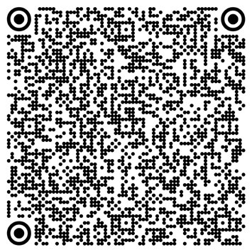
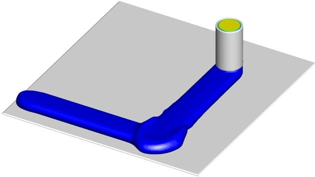

Numerical modelling of planned corner deposition in 3D concrete printing
E.A. Khalid, A.K. Issam, M.T. Mollah, J. Spangenberg
Archives of Materials Science and Engineering 121(2), 71–79, 2023
Abstract
Purpose: Analysis of different path planning strategies and the effects of changing printhead direction in the geometrical conformity and the process precision around 90° corner in order to enable a simple and cost-effective way of facilitating the determination of an optimal printing mode for fast and accurate print corners in 3D concrete printing. Design/methodology/approach: The material flow is characterized by a viscoplastic Bingham fluid. The printhead moves according to a prescribed speed to print the trajectory. The model solves the Navier-Stokes equations and uses the volume of fluid (VOF) technique. The acceleration steps and jerk (j) carry out the direction change. A smoothing factor is provided to smooth the toolpath. Several simulations were performed by varying the smoothing factor and jerk. Findings: Overfilling at the sharp corner was found when the printhead velocity was kept constant while extruding mortar at a fixed extrusion velocity; however, proportional extrusion velocity with the printhead motion has improved the quality of the corner. Otherwise, a slight improvement in the corner shape related to applying a jerk was found. Research limitations/implications: The Computational Fluid Dynamics (CFD) model could take an important amount of computing time to solve the problem; however, it serves as an efficient tool for accelerating different costly and time-consuming path planning processes for 3D concrete printing. Smaller angles and tilted printhead positions should be numerically and experimentally investigated in future research. Practical implications: The developed CFD model is suited for executing parametric studies in parallel to determine the appropriate printing motion strategy for each trajectory with corners.
Figures from this paper
{kind=link}

{kind=link}

Citation
@article{23_2023_abbaoui_et_al_journal_numerical_model,
title = {Numerical modelling of planned corner deposition in 3D concrete printing},
author = {E.A. Khalid and A.K. Issam and M.T. Mollah and J. Spangenberg},
journal = {Archives of Materials Science and Engineering 121(2), 71–79},
year = {2023},
doi = {10.5604/01.3001.0053.8488},
url = {https://doi.org/10.5604/01.3001.0053.8488}
}